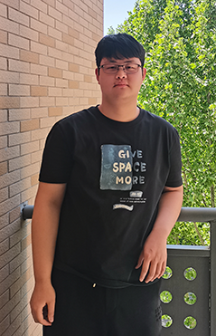

Apr 25, 2024
Our work on Cas13h was published in Nucleic Acids Research. Excellent biochemistry from Fugen! Many congratulations~~
| Home | Member | Publications | News | Gallery | Blogs |
Discovery, biochemistry, and working mechanism of programmable nucleases.
 ZhuangLi Principal Investigator In 2018, he got his PhD degree in Dr. Haitao Li's lab (Tsinghua) where he works on epigenetics. From 2018 to 2021, he had postdoc training in Dr. Leifu Chang's lab (Purdue) where he learnt cryo-EM and worked on CRISPR. He had a short stay at Dr. Liang Tong's lab (CUNY). Since 2022, he started independent research with focus on the discovery, biochemistry, and working mechanism of programmable nucleases. He is much like a slasher. In his early stage, he grows a lot interest in different branches of biology, but later on narrows into biochemistry and structural biology. Still, he has broad interests in all kinds of cool stuff, and always eager to learn something new. He has long-lasting interests in computers and chemistry (the biology-related kind), and now he is planning on being a bioinformatics guy. In his spare time, he spent time on computer games, billiards, badmintons, table tennis. Email Google Scholar Github Twitter ORCID | |
 Fugen Chen Graduate Student (since 2022) In 2022, He got his bachelor’s degree in Yangtze university. In 2025, He’ll get his master degree majoring in biochemistry and molecular biology in Zhuang Li’s lab with vibrant atmosphere in Hubei university. With his tutor’s guidance and his passionate about anything unknow, he delved into the working mechanism of CRISPR-Cas system since 2022. Outside of academics, he always dive into computer games in his spare time, and sometimes do some physical exercise such as running to ensure a healthy body. Email | |
 Feng Wang Graduate Student (since 2023) After graduating from Hubei University with a bachelor's degree in 2014, she worked as a high school chemistry teacher at a certain high school. However, she did not want to and was not willing to be just a high school teacher for her whole life. She especially did not want to become a greasy square-dancing auntie when she grew older. She still wanted to pursue her research dreams. Therefore, after resigning in 2019, she returned to Hubei University to pursue a master's degree, focusing on the mechanisms of transcription initiation and termination-related proteins in prokaryotic bacteria. In 2022, she joined the lab to continue her path towards a Ph.D., studying CRISPR-related mechanisms. She loves riverbanks, beautiful and fragrant flowers, and she is talented in cooking. Email ORCID | |
Haijiang Xu Graduate Student (since 2022) My name is Xu Haijiang, I was born in Henan Province in the Central Plains of China, and I grew up in the land of the Central Plains, which taught me to be practical and serious in everything I do, and this belief continues to this day, and it is still the standard of self-regulation. In 2018, he studied at Henan University of Urban Construction, mainly in the Lutie lab to study topics related to macrofungi, in which he saw the scientific world existing in nature. In 2022, he studied for a master's degree at Hubei University, and did research on the biochemical molecules and structural biology of CRISPR system-related proteins in Professor LiZhuang's lab, and is mainly doing molecular cloning, protein purification and some related biochemical experiments. During my master's degree, I always learned something new in the passionate group meeting once a week. In addition to scientific research, our research group will also organize some sports activities, badminton once a week to strengthen our physical fitness, I usually play basketball to relax myself, and music is also one of my hobbies.I will focus on biochemical experiments, and Python is also a skill I want to master, I will use it to improve my office productivity, and I also want to learn some skills related to Ps drawing and Pr video editing. Email | |
 Jialin Xue Graduate Student (since 2022) Hello, everyone! My name is Jialin Xue, and I am excited to be a part of this dynamic lab. As someone who has always been curious about the world, I found myself fascinated by the biological world. In the lab, I love the meticulous attention to detail and the enthusiasm to tackle new challenges. I enjoy collaborating with my colleagues and learning from their different perspectives. In my spare time, I read and listen to music. I find these activities help to relax the body and mind. Email | |
Chendi Zhang Graduate Student (since 2022) An indigenous of Hubei University, cheap labor, low-skilled worker, easily dead living corpse. | |
 | |

|
Molecular mechanism for target RNA recognition and cleavage of Cas13h
This work provides the working mechanism of Cas13h1, a novel Cas13 subtype.
Molecular mechanism for target recognition, dimerization, and activation of Pyrococcus furiosus Argonaute
This work provides the firstevidence that dimerization plays important role in cleavage activity of Argonaute.

Structural Basis for the Ribonuclease Activity of a Thermostable CRISPR-Cas13a from Thermoclostridium caenicola.
This work is about a thermostable Cas13a which lacks pre-crRNA processing activity. Please check the blogs for author digestion
Our work on Cas13h was published in Nucleic Acids Research. Excellent biochemistry from Fugen! Many congratulations~~
Collaboration work published with old friend on Nature Communications. Congratulations to Heng, his crew, and Chendi~~
Our favorite story of PfAgo gets published on Molecular Cell in collaboration with Dr. Lixin Ma. Many Congratulations to Dr. Longyu Wang, Dr. Wanping Chen, and Chendi~~
Feng started to pursue her PhD degree.
Collaboration work published with old friend on Nucleic Acids Research. Congratulations to Heng, his crew, and Chendi~~
Collaboration work published with old friend on Plos Biology. Congratulations to Heng, his crew, and Feng~~
Our work on Cas13a get published in Journal of Molecular Biology. Things are always hard before they are getting easy! This is the first time Feng published her first-author paper, and Zhuang published his last-authored paper.
The crew finally had some place to work and start experiments.
Got research $$$ under the wings of Dr. Shihui Yang ~~
Research $$$
Research $$$
Chendi, Fugen, Haijiang, and Jialin joined the lab to pursue the master degrees, and started experiment from scratch.
Feng joined the lab as a technician, and started working on different juvenile projects.
Chendi joined the lab, and started working on cryo-EM very seriously.
????
????
2021
Jan 26